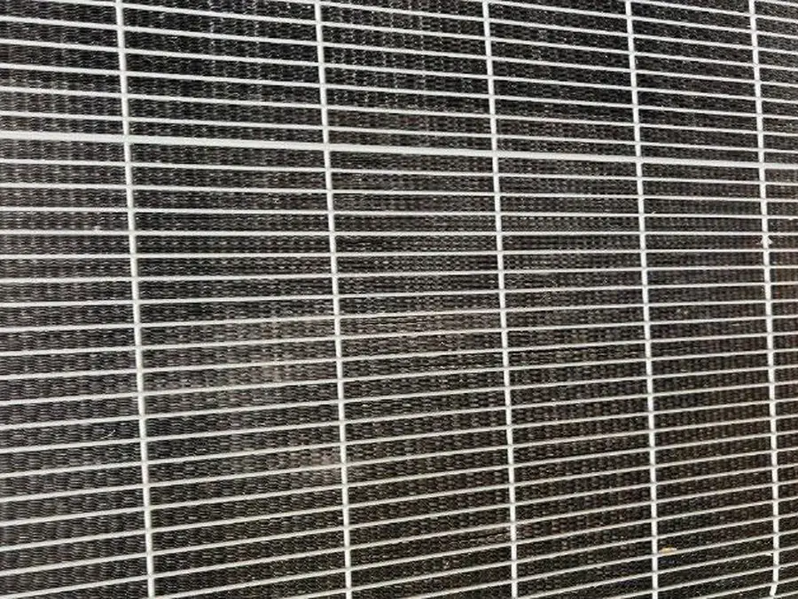
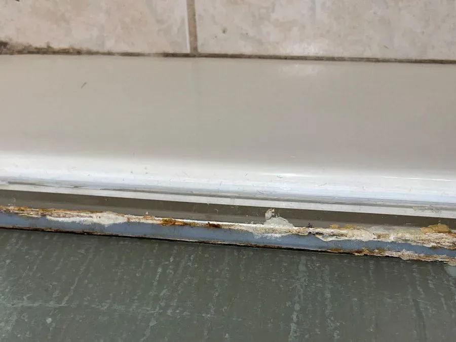
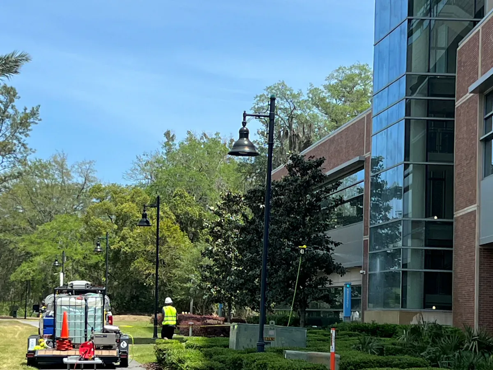

Healthcare maintenance cannot become an event.
Clean, passivate, and maintain water systems while the building stays occupied and fume-event risk stays lower.
Why VertKleen fits Healthcare.
Hospitals and occupied campuses cannot plan around fume events or extended shutdowns. VertKleen cleans, passivates, and supports scoped water-system programs with HMIS 0-0-0 product options, so maintenance can be planned around patients, staff, and visitors still in the building.
See the proof
What Healthcare buyers need documented first.
Occupied facilities cannot trade maintenance needs for fume events, shutdowns, or uncontrolled chemical exposure.
Bundle: WaterSafe60 and Purgo for scoped water-program support, HCR for passivation, CR for pH and alkaline cleaning.
VertKleen products for Healthcare.
Replacement options for the legacy chemistry this work usually relies on first.
Field proof from Healthcare sites.
Documented work from the VertKleen field library.



Put the current chemical on the table.
Send the legacy product, surface, soil, volume, and buying deadline. MASEST routes the replacement, proof, sample, or partner path from there.